Open Specy App Tutorial
Win Cowger, Zacharias Steinmetz
2023-08-31
Source:vignettes/app.Rmd
app.RmdDocument Overview
This document outlines a common workflow for using the Open Specy package and app and highlights some topics that users are often requesting a tutorial on. If the document is followed sequentially from beginning to end, the user will have a better understanding of every procedure involved in using the Open Specy R package and app as a tool for interpreting spectra. It takes approximately 45 minutes to read through and follow along with this standard operating procedure the first time. Afterward, knowledgeable users should be able to thoroughly analyze spectra at an average speed of 1 min-1 or faster with the new batch and automated procedures.
R Package and App
The Open Specy R package is the backbone of the Shiny app. The choice is yours as to which you start with, we use both on a regular basis. The tutorial will talk through the R functions and app features step by step together.
Running the App
To get started with the Open Specy user interface, access https://openanalysis.org/openspecy/ or start the Shiny GUI directly from your own computer in R.
run_app()Reading Data
If you have your own data, click Browse at the top left hand corner of the Analyze Spectra tab.
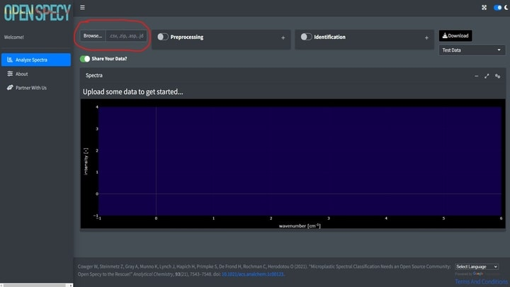
Before uploading, indicate if you would like to share the uploaded data or not using the slider. If selected, any data uploaded to the tool will automatically be shared under CC-BY 4.0 license and will be available for researchers and other ventures to use to improve spectral analysis, build machine learning tools, etc. Some users may choose not to share if they need to keep their data private. If switched off, none of the uploaded data will be stored or shared in Open Specy.

Open Specy allows for upload of native Open Specy .y(a)ml, .json, or
.rds files. In addition, .csv, .asp, .jdx, .0, .spa, .spc, and .zip
files can be imported. .zip files can either contain multiple files with
individual spectra in them of the non-zip formats or it can contain a
.hdr and .dat file that form an ENVI file for a spectral map. Open Specy
and .csv files should always load correctly but the other file types are
still in development, though most of the time these files work
perfectly. If uploading a .csv file, label the column with the
wavenumbers wavenumber and name the column with the
intensities intensity. Wavenumber units must be
cm-1. Any other columns are not used by the software. Always
keep a copy of the original file before alteration to preserve metadata
and raw data for your records.
| wavenumber | intensity |
|---|---|
| 301.040 | 26 |
| 304.632 | 50 |
| 308.221 | 48 |
| 311.810 | 45 |
| 315.398 | 46 |
| 318.983 | 42 |
It is best practice to cross check files in the proprietary software they came from and Open Specy before use in Open Specy. Due to the complexity of some proprietary file types, we haven’t been able to make them fully compatible yet. If your file is not working, please contact the administrator and share the file so that we can work on integrating it.
The specific steps to converting your instrument’s native files to .csv can be found in its software manual or you can check out Spectragryph, which supports many spectral file conversions (see Mini Tutorial section: File conversion in Spectragryph to Open Specy accepted format).
The following line of code will read in your data when using the package and interprets which reading function to use based on the file extension.
read_any("path/to/your/data")These file type specific functions will also read in spectral data accordingly if you have a particular format in mind.
If you don’t have your own data, you can use a test dataset.
A .csv file of an HDPE Raman spectrum will download on your computer. This file can also be used as a template for formatting .csv data into an Open Specy accepted format.
The following line of code does the same to load the example file into R:
data("raman_hdpe")We also have many onboard files that you can call to test different formats:
spectral_map <- read_extdata("CA_tiny_map.zip") |>
read_any() # preserves some metadata
asp_example <- read_extdata("ftir_ldpe_soil.asp") |>
read_any()
ps_example <- read_extdata("ftir_ps.0") |>
read_any() # preserves some metadata
spc_example <- read_extdata("raman_atacamit.spc") |>
read_any()
csv_example <- read_extdata("raman_hdpe.csv") |>
read_any()
json_example <- read_extdata("raman_hdpe.json") |>
read_any() # read in exactly as an OpenSpecy object
rds_example <- read_extdata("raman_hdpe.rds") |>
read_any() # read in exactly as an OpenSpecy object
yml_example <- read_extdata("raman_hdpe.yml") |>
read_any() # read in exactly as an OpenSpecy object
batch_example <- read_extdata("testdata_zipped.zip") |>
read_any()You will notice now that the R package reads in files into an object
with class OpenSpecy. This is a class we created for high
throughput spectral analysis which now also preserves spectral metadata.
You can even create these from scratch if you’d like:
scratch_OpenSpecy <- as_OpenSpecy(x = seq(1000,2000, by = 5),
spectra = data.frame(runif(n = 201)),
metadata = list(file_name = "fake_noise")) We have some generic functions built for inspecting the spectra:
print(scratch_OpenSpecy) # shows the raw object
#> wavenumber runif.n...201.
#> 1: 1000 0.12512836
#> 2: 1005 0.65305385
#> 3: 1010 0.27721982
#> 4: 1015 0.93879813
#> 5: 1020 0.35430358
#> ---
#> 197: 1980 0.11665269
#> 198: 1985 0.74767991
#> 199: 1990 0.09788435
#> 200: 1995 0.38326004
#> 201: 2000 0.38561114
#>
#> $metadata
#> x y file_name file_id col_id
#> 1: 1 1 fake_noise 3073dd31d8f1b8be9c052af61ceb2bbe runif.n...201.
summary(scratch_OpenSpecy) # summarizes the contents of the spectra
#> $wavenumber
#> Length Min. Max. Res.
#> 201 1000 2000 5
#>
#> $spectra
#> Number Min. Intensity Max. Intensity
#> 1 0.005195796 0.9954291
#>
#> $metadata
#> Min. Max.
#> x 1 1
#> y 1 1
#> [1] "x" "y" "file_name" "file_id" "col_id"
head(scratch_OpenSpecy) # shows the top wavenumbers and intensities
#> wavenumber runif.n...201.
#> 1: 1000 0.1251284
#> 2: 1005 0.6530539
#> 3: 1010 0.2772198
#> 4: 1015 0.9387981
#> 5: 1020 0.3543036
#> 6: 1025 0.2312844Visualization
Spectra
In the app after spectral data are uploaded, it will appear in the main window. This plot is selectable, zoomable, and provides information on hover. You can also save a .png file of the plot view using the camera icon at the top right when you hover over the plot.
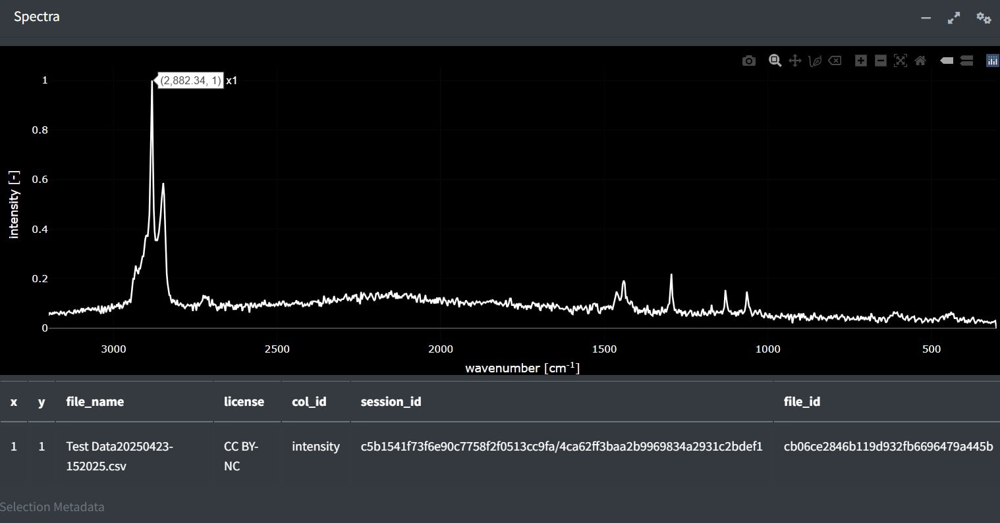
In R, we have two ways to visualize your spectra, one is quick and efficient and the other is interactive. Here is an example of quick and efficient plotting.
plot(scratch_OpenSpecy) # quick and efficient
This is an example of an interactive plot.
plotly_spec(scratch_OpenSpecy) # this will min-max normalize your data even
# if it isn't already but are not changing your
# underlying dataWith interactive plots you can also plot two different datasets simultaneously to compare.
plotly_spec(scratch_OpenSpecy, rds_example) # interactive comparisonMaps
Spectral maps can also be visualized as overlaid spectra but in
addition the spatial information can be plotted as a heatmap. A similar
plot should appear in the app if you upload multiple spectra or a
spectral map. It is important to note that when multiple spectra are
uploaded in batch they are prescribed x and y
coordinates, this can be helpful for visualizing summary statistics and
navigating vast amounts of data but shouldn’t be confused with data
which actually has spatial coordinates. Hovering over the map will
reveal information about the signal and noise and correlation values.
Clicking the map will provide the selected spectrum underneath. In the
app, the colors of the heatmap are either the signal and noise or the
spectral identifications depending on whether the identification is
turned on or not. Pixels are black if the spectra does not pass the
signal-noise threshold and/or the correlation threshold.
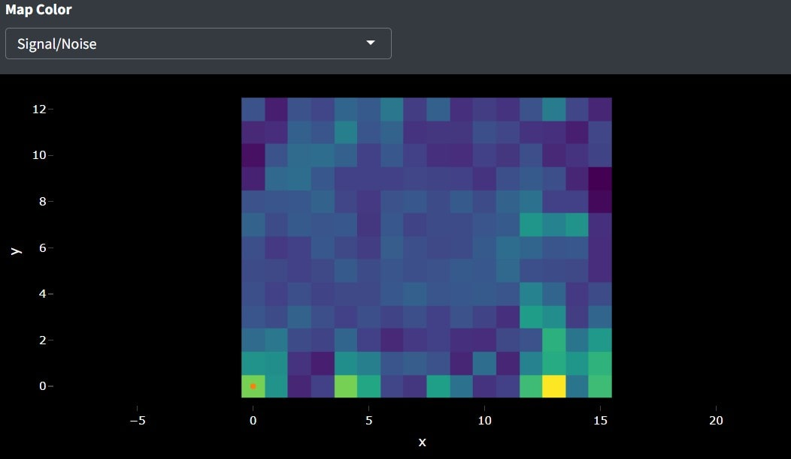
The same plot can be created in R but the user can control what
values form the colors of the heatmap by specifying z.
heatmap_spec(spectral_map,
z = spectral_map$metadata$x) # will show more advanced example
# later in tutorialAn interactive plot of the heatmap and spectra overlayed can be
generated with the interactive_plot() function. A user can
hover over the heatmap to identify the next row id they are interested
in and update the value of select to see that spectrum.
interactive_plot(spectral_map, select = 100, z = spectral_map$metadata$x)Processing
After uploading data, you can preprocess the data using intensity adjustment, baseline subtraction, smoothing, flattening, and range selection and save your preprocessed data. Once the process button is selected the default processing will initiate. This is an absolute derivative transformation, it is kind of magic, it does something similar to smoothing, baseline subtraction, and intensity correction simultaneously and really quickly. By clicking preprocessing you should see the spectrum update with the processed spectra.
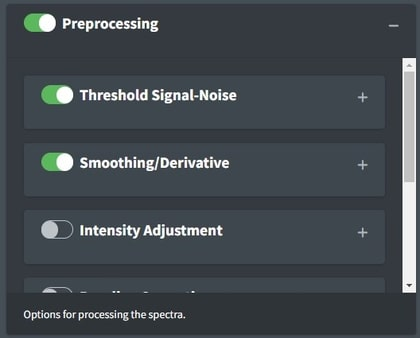
To view the raw data again, just deselect preprocessing. Toggling preprocessing on and off can help you to make sure that the spectra are processed correctly.
The process_spec() function is a monolithic function for
all processing procedures which is optimized by default to result in
high signal to noise in most cases, same as the app.
processed <- process_spec(raman_hdpe)
summary(processed)
#> $wavenumber
#> Length Min. Max. Res.
#> 579 305 3195 5
#>
#> $spectra
#> Number Min. Intensity Max. Intensity
#> 1 0 1
#>
#> $metadata
#> Min. Max.
#> x 1 1
#> y 1 1
#> [1] "x" "y" "user_name"
#> [4] "spectrum_type" "spectrum_identity" "organization"
#> [7] "license" "session_id" "file_id"
summary(raman_hdpe)
#> $wavenumber
#> Length Min. Max. Res.
#> 964 301.04 3198.12 2.54
#>
#> $spectra
#> Number Min. Intensity Max. Intensity
#> 1 26 816
#>
#> $metadata
#> Min. Max.
#> x 1 1
#> y 1 1
#> [1] "x" "y" "user_name"
#> [4] "spectrum_type" "spectrum_identity" "organization"
#> [7] "license" "session_id" "file_id"You can compare the processed and unprocessed data in an overlay plot:
plotly_spec(raman_hdpe, processed)We want people to use the process_spec() function for
most processing operations, all processing functions can be tuned using
its parameters. However, we recognize that nesting of functions and
order of operations can be useful for users to control so you can also
use individual functions for each operation if you’d like.
Threshold Signal-Noise
Considering whether you have enough signal to analyze spectra is important. Classical spectroscopy would recommend your highest peak to be at least 10 times the baseline of your processed spectra before you begin analysis. If your spectra is below that threshold, you may want to consider recollecting it. In practice, we are rarely able to collect spectra of that good quality and more often use 5. The Signal Over Noise technique searches your spectra for high and low regions and conducts division on them to derive the signal to noise ratio. Signal Times Noise multiplies the mean signal by the standard deviation of the signal and Total Signal sums the intensities. The latter can be really useful for thresholding spectral maps to identify particles which we will discuss later.
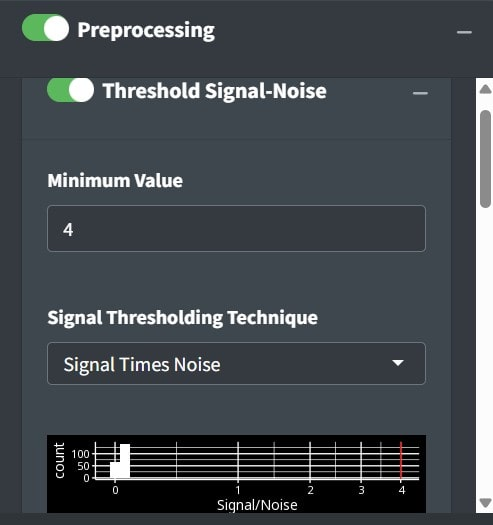
If analyzing spectra in batch, we recommend looking at the heatmap and optimizing the percent of spectra that are above your signal to noise threshold to determine the correct settings instead of looking through spectra individually. Good Signal tells you what percent of your data are above your signal threshold.
Intensity Adjustment

Open Specy assumes that intensity units are in absorbance units but Open Specy can adjust reflectance or transmittance spectra to absorbance units using this selection. The transmittance adjustment uses the \(\log_{10} 1/T\) calculation which does not correct for system or particle characteristics. The reflectance adjustment use the Kubelka-Munk equation \(\frac{(1-R)^2}{2R}\). If none is selected, Open Specy assumes that the uploaded data is an absorbance spectrum and does not apply an adjustment.
This is the respective R code for a scenario where the spectra doesn’t need intensity adjustment:
raman_adj <- raman_hdpe |>
adj_intens(type = "none")
plot(raman_adj)
Conforming
Conforming spectra is essential before comparing to a reference library and can be useful for summarizing data when you don’t need it to be highly resolved spectrally. In the app, conforming happens behind the scenes without any user input to make sure that the spectra the user uploads and the library spectra will be compatible. In code, we set the default spectral resolution to 5 because this tends to be pretty good for a lot of applications and is in between 4 and 8 which are commonly used wavenumber resolutions. There are several ways that this is function can be specified.
conform_spec(raman_hdpe) |> # default convert res to 5 wavenumbers.
summary()
#> $wavenumber
#> Length Min. Max. Res.
#> 579 305 3195 5
#>
#> $spectra
#> Number Min. Intensity Max. Intensity
#> 1 41.65339 662.0608
#>
#> $metadata
#> Min. Max.
#> x 1 1
#> y 1 1
#> [1] "x" "y" "user_name"
#> [4] "spectrum_type" "spectrum_identity" "organization"
#> [7] "license" "session_id" "file_id"
# Force one spectrum to have the exact same wavenumbers as another
conform_spec(asp_example, range = ps_example$wavenumber, res = NULL) |>
summary()
#> $wavenumber
#> Length Min. Max. Res.
#> 1736 651.8728 3998.025 1.928618
#>
#> $spectra
#> Number Min. Intensity Max. Intensity
#> 1 0.0009781419 0.5156938
#>
#> $metadata
#> Min. Max.
#> x 1 1
#> y 1 1
#> [1] "x" "y" "file_name" "license" "session_id"
#> [6] "file_id" "col_id"
# Specify the wavenumber resolution and use a rolling join instead of linear
# approximation (faster for large datasets).
conform_spec(spectral_map, range = ps_example$wavenumber, res = 10,
type = "roll") |>
summary()
#> $wavenumber
#> Length Min. Max. Res.
#> 329 720 4000 10
#>
#> $spectra
#> Number Min. Intensity Max. Intensity
#> 208 -1.317072 1.168225
#>
#> $metadata
#> Min. Max.
#> x 0 12
#> y 0 15
#> [1] "x" "y" "file_name" "license"
#> [5] "description" "samples" "lines" "bands"
#> [9] "header offset" "data type" "interleave" "z plot titles"
#> [13] "pixel size" "session_id" "file_id" "col_id"Smoothing
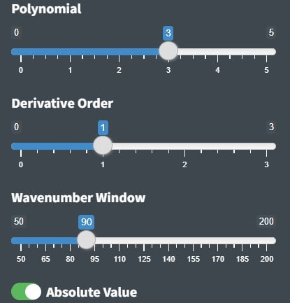
The first step of the Open Specy preprocessing routing is spectral smoothing. The goal of this function is to increase the signal to noise ratio (S/N) without distorting the shape or relative size of the peaks. The value on the slider is the polynomial order of the Savitzky-Golay (SG) filter. Higher numbers lead to more wiggly fits and thus less smooth, lower numbers lead to more smooth fits. The SG filter is fit to a moving window of 11 data points by default where the center point in the window is replaced with the polynomial estimate. Larger windows will produce smoother fits. The derivative order is set to 1 by default which transforms the spectra to their first derivative. A zero order derivative will have no derivative transformation. When smoothing is done well, peak shapes and relative heights should not change. The absolute value is primarily useful for first derivative spectra where the absolute value results in an absorbance-like spectrum which is why we set it as the default.
Examples of smoothing with the R package:
library(ggplot2)
data("raman_hdpe")
none <- adj_intens(raman_hdpe, make_rel = T)
p1 <- smooth_intens(raman_hdpe, polynomial = 1)
p4 <- smooth_intens(raman_hdpe, polynomial = 4)
compare_derivative <- c_spec(list(none, p1, p4))
plot(compare_derivative)
Sample raman_hdpe spectrum with different smoothing
polynomials from Cowger et al. (2020).
Derivative transformation can happen with the same function. You’ll
notice a new function we are using c_spec() which is used
to combine spectral objects into one OpenSpecy object.
none <- adj_intens(raman_hdpe, make_rel = T)
d1 <- smooth_intens(raman_hdpe, derivative = 1, abs = T)
d2 <- smooth_intens(raman_hdpe, derivative = 2)
compare_derivative <- c_spec(list(none, d1, d2))
plot(compare_derivative)
Sample raman_hdpe spectrum with different derivatives from
Cowger et al. (2020).
Baseline Correction
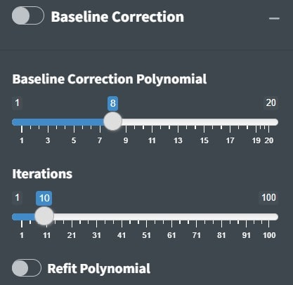
The second step of Open Specy’s preprocessing routine is baseline correction. The goal of baseline correction is to get all non-peak regions of the spectra to zero absorbance. The higher the polynomial order, the more wiggly the fit to the baseline. If the baseline is not very wiggly, a more wiggly fit could remove peaks which is not desired. The baseline correction algorithm used in Open Specy is called “iModPolyfit” (Zhao et al. 2007). This algorithm iteratively fits polynomial equations of the specified order to the whole spectrum. During the first fit iteration, peak regions will often be above the baseline fit. The data in the peak region is removed from the fit to make sure that the baseline is less likely to fit to the peaks. The iterative fitting terminates once the difference between the new and previous fit is small. An example of a good baseline fit below. For those who have been with OpenSpecy a while, you will notice the app no longer supports manual baseline correction, it was a hard choice but it just didn’t make sense to keep it now that we are moving toward high throughput automated methods. It does still exist in the R function though.
data("raman_hdpe")
none <- adj_intens(raman_hdpe)
d2 <- subtr_baseline(raman_hdpe, degree = 2)
d8 <- subtr_baseline(raman_hdpe, degree = 8)
compare_subtraction <- c_spec(list(none, d2, d8))
plot(compare_subtraction)
Sample raman_hdpe spectrum with different degrees of
background subtraction (Cowger et al., 2020).
Range Selection
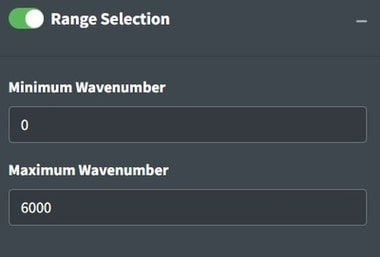
Sometimes an instrument operates with high noise at the ends of the spectrum and, a baseline fit produces distortions, or there are regions of interest for analysis. Range selection accomplishes those goals. You should look into the signal to noise ratio of your specific instrument by wavelength to determine what wavelength ranges to use. Distortions due to baseline fit can be assessed from looking at the preprocess spectra. Additionally, you can restrict the range to examine a single peak or a subset of peaks of interests. The maximum and minimum wavenumbers will specify the range to keep in the app. In the R function, multiple ranges can be specified simultaneously.
data("raman_hdpe")
none <- adj_intens(raman_hdpe)
r1 <- restrict_range(raman_hdpe, min = 1000, max = 2000)
r2 <- restrict_range(raman_hdpe, min = c(1000, 1800), max = c(1200, 2000))
compare_ranges <- c_spec(list(none, r1, r2), range = "common")
# Common argument crops the ranges to the most common range between the spectra
# when joining.
plot(compare_ranges)
Sample raman_hdpe spectrum with different degrees of
background subtraction (Cowger et al., 2020).
Flattening Ranges
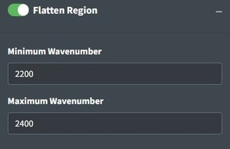
Sometimes there are peaks that really shouldn’t be in your spectra
and can distort your interpretation of the spectra but you don’t
necessarily want to remove the regions from the analysis because you
believe those regions should be flat instead of having a peak. One way
to deal with this is to replace the peak values with the mean of the
values around the peak. This is the purpose of the
flatten_range function. By default it is set to flatten the
CO2 region for FTIR spectra because that region often needs to be
flattened when atmouspheric artefacts occur in spectra. Like
restrict_range, the R function can accept multiple
ranges.
single <- filter_spec(spectral_map, 120) # Function to filter spectra by index
# number or name or a logical vector.
none <- adj_intens(single)
f1 <- flatten_range(single)
f2 <- flatten_range(single, min = c(1000, 2500), max = c(1200, 3000))
compare_flats <- c_spec(list(none, f1, f2))
plot(compare_flats)
Sample raman_hdpe spectrum with different degrees of
background subtraction (Cowger et al., 2020).
Min-Max Normalization
Min-Max normalization is used throughout the app but is not one of the options the user can specify. Often we regard spectral intensities as arbitrary and min-max normalization allows us to view spectra on the same scale without drastically distorting their shapes or relative peak intensities. In the app, it is primarily used for plotting and as a processing step before correlation analysis. In the package, most of the processing functions will min-max transform your spectra relative by default if you do not specify otherwise. This plot shows the two spectra on such different scales that one looks like a straight line.
none <- adj_intens(raman_hdpe, make_rel = F)
relative <- adj_intens(raman_hdpe, make_rel = T)
compare_rel <- c_spec(list(none, relative))
plot(compare_rel)
Sample raman_hdpe spectrum with different degrees of
background subtraction (Cowger et al., 2020).
Identifying Spectra
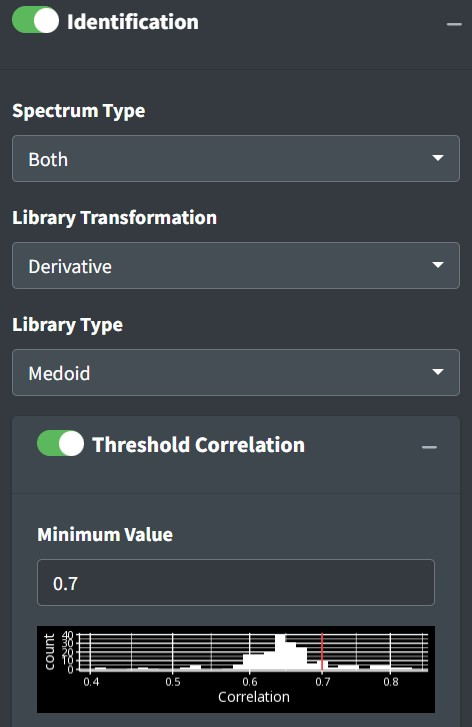
After uploading data and preprocessing it (if desired) you can now identify the spectrum. To identify the spectrum go to the Identification box. Pro tip: if you select *Identification** without uploading data to the app, you’ll be able to explore the library by itself.
Reading Libraries
These options define the strategy for identification. The ID Library will inform which library is used. Both (default) will search both FTIR and Raman libraries. Deriv will search against a derivative transformed library. No Baseline will search against a baseline corrected library. This should be in line with how you choose to process your spectra. Cor options use a simple Pearson correlation search algorithm. AI is currently experimental and uses either a multinomial model or correlation on mediod spectra from the library. Correlation thresholding will set the minimum value from matching to use as a ‘positive identification’
In the R package, you’ll download and load the libraries into your working environment.
Matches
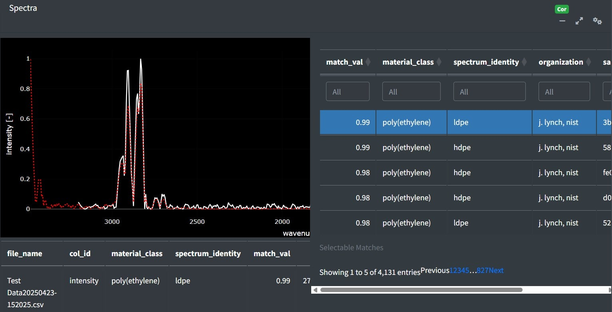
Top matches in the app can be assessed by clicking the cog in the right hand corner of the Spectra box. This will open a side window with the matches sorted from most to least similar. Clicking on rows in the table will add the selected match to the spectra viewer. Using the table’s filter options, you can restrict the range of Pearson's r values or search for specific material types.
The same table can be returned using the OpenSpecy package commands in the R console.
data("test_lib")
processed <- process_spec(ps_example,
conform_spec_args = list(range = test_lib$wavenumber,
res = NULL))
test <- match_spec(processed, test_lib, add_object_metadata = "col_id",
add_library_metadata = "sample_name")Selection Metadata

Whatever match is selected from the match table may have additional metadata about it. That metadata will be displayed below the plot. Some of this metadata may assist you in interpreting the spectra. For example, if the spectra has metadata which says it is a liquid and you are analyzing a solid particle, that spectrum may not be the best match.
The R command for manual metadata selection using
sample_name == 5381 as example is:
find_spec(sample_name == 5381, library = spec_lib, which = "raman")Match Plot

This plot is dynamically updated by selecting matches from the match table. The red spectrum is the spectrum that you selected from the reference library and the white spectrum is the spectrum that you are trying to identify. Whenever a new dataset is uploaded, the plot and data table in this tab will be updated. These plots can be saved as a .png by clicking the camera button at the top of the plot.
Additional App Features
Accessibility is extremely important to us and we are making strives to improve the accessibility of Open Specy for all spectroscopists. Please reach out if you have ideas for improvement.
We added a Google translate plugin to all pages in the app so that you can easily translate the app. We know that not all languages will be fully supported but we will continue to try and improve the translations.
Download Data
After you have the preprocessing parameters set, we recommend that you download the preprocessed data for your records. The download data button will append the uploaded data to three columns created by the preprocessing parameters. “Wavelength” and “Absorbance” are columns from the data uploaded by the user. “NormalizedIntensity” is the max-min normalized value (Equation 1) of the “Absorbance”. “Smoothed” is the Savitzky-Golay filter specified by the slider explained above. “BaselineRemoved” is the smoothed and baseline corrected value that is visible on the center plot.

References
Chabuka BK, Kalivas JH (2020). “Application of a Hybrid Fusion Classification Process for Identification of Microplastics Based on Fourier Transform Infrared Spectroscopy.” Applied Spectroscopy, 74(9), 1167–1183. doi: 10.1177/0003702820923993.
Cowger W, Gray A, Christiansen SH, Christiansen SH, Christiansen SH, De Frond H, Deshpande AD, Hemabessiere L, Lee E, Mill L, et al. (2020). “Critical Review of Processing and Classification Techniques for Images and Spectra in Microplastic Research.” Applied Spectroscopy, 74(9), 989–1010. doi: 10.1177/0003702820929064.
Cowger W, Steinmetz Z, Gray A, Munno K, Lynch J, Hapich H, Primpke S, De Frond H, Rochman C, Herodotou O (2021). “Microplastic Spectral Classification Needs an Open Source Community: Open Specy to the Rescue!” Analytical Chemistry, 93(21), 7543–7548. doi: 10.1021/acs.analchem.1c00123.
Primpke S, Wirth M, Lorenz C, Gerdts G (2018). “Reference Database Design for the Automated Analysis of Microplastic Samples Based on Fourier Transform Infrared (FTIR) Spectroscopy.” Analytical and Bioanalytical Chemistry, 410(21), 5131–5141. doi: 10.1007/s00216-018-1156-x.
Renner G, Schmidt TC, Schram J (2017). “A New Chemometric Approach for Automatic Identification of Microplastics from Environmental Compartments Based on FT-IR Spectroscopy.” Analytical Chemistry, 89(22), 12045–12053. doi: 10.1021/acs.analchem.7b02472.
Savitzky A, Golay MJ (1964). “Smoothing and Differentiation of Data by Simplified Least Squares Procedures.” Analytical Chemistry, 36(8), 1627–1639.
Zhao J, Lui H, McLean DI, Zeng H (2007). “Automated Autofluorescence Background Subtraction Algorithm for Biomedical Raman Spectroscopy.” Applied Spectroscopy, 61(11), 1225–1232. doi: 10.1366/000370207782597003.